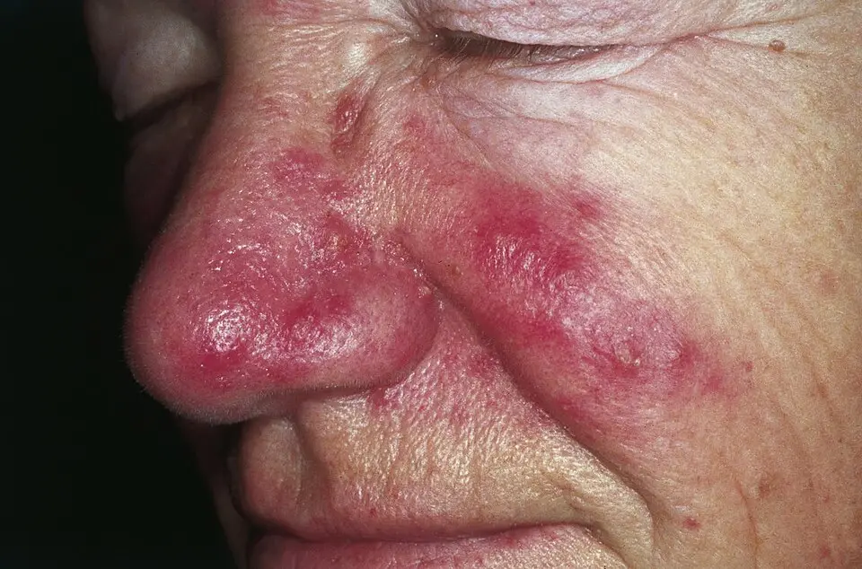

1. Définition de la plainte
Le flushing correspond à des accès transitoires de rougeur cutanée liés à une augmentation du débit sanguin de la peau. La sensation de chaleur accompagne souvent ces bouffées vasomotrices, surtout au visage, au cou et au décolleté. Une rougeur fixe, une fièvre ou une transpiration isolée demande une autre caractérisationS1S2.
Flushing, bouffée vasomotrice et érythème ne décrivent pas exactement la même observation
Le terme anglais flushing est le phénomène clinique que PROFILES 2023 retient sous G7S1S2. « Bouffées vasomotrices » fournit une traduction clinique française, mais cette expression ne doit pas faire présumer une origine ménopausique. Un érythème décrit une rougeur ; son caractère paroxystique, sa disparition et sa distribution déterminent s’il s’agit réellement d’un flushS1S2.
La dilatation des petits vaisseaux superficiels fait arriver davantage de sang dans la peau, ce qui rend la rougeur visible. Le patient peut ressentir une chaleur sans pouvoir montrer de rougeur au moment de la consultation ; des photographies datées peuvent alors documenter l’épisode. La couleur perçue dépend de l’éclairage et du phototype, et une rougeur peu visible ne suffit pas à écarter des symptômes systémiquesS2S3.
| Le patient décrit | Le clinicien précise | La distinction change la suite |
|---|---|---|
| « Je rougis par vagues. » | Il demande si la peau retrouve son aspect habituel entre les épisodes. | Une évolution par accès soutient le flushing ; une lésion persistante fait rechercher une dermatose. |
| « J’ai trop chaud. » | Il demande si une rougeur apparaît et mesure la température si une fièvre est possible. | Une chaleur subjective ne démontre ni une vasodilatation ni une hyperthermie. |
| « Je transpire. » | Il précise si la sueur précède, accompagne ou suit la rougeur. | Une sudation seule relève aussi du SSP G1 ; une bouffée peut associer sudation et vasodilatation. |
| « Mon visage reste rouge. » | Il examine la peau en dehors des crises et recherche des lésions persistantes. | Une rosacée peut associer un érythème permanent à des accès de flushing ; les deux phénomènes peuvent coexister. |
Le piège consiste à transformer le mot « bouffée » en diagnostic de ménopause, ou le mot « rougeur » en diagnostic d’allergie. La sémantique reste une étape de description et ne prouve pas le mécanismeS2S3.
2. Épidémiologie : Suisse puis Europe
Le flushing réunit des phénomènes physiologiques et des maladies dont les populations diffèrent. Les sources suisses consultées ne fournissent pas une estimation représentative commune du symptôme. Les données européennes propres à une cause ne permettent pas de classer les dix diagnostics chez une personne qui consulte pour des boufféesS3S10S11.
Les indicateurs doivent préciser leur population et leur définition
| Indicateur | Lecture en Suisse | Europe et portée clinique |
|---|---|---|
| La prévalence mesure la proportion de personnes concernées. | Une prévalence suisse se rattache à une maladie précise et ne se transpose pas au symptôme toutes causes confondues. | Une prévalence de rosacée n’est pas une prévalence de flushing ; chaque chiffre garde sa population et sa définition. |
| L’incidence mesure les nouveaux épisodes ou nouveaux cas dans une période définie. | Une incidence se définit par épisodes ou par personnes, et ce choix change le chiffre. | Les études de maladies précises ne fournissent pas une incidence commune de tous les flushs. |
| La distribution par âge décrit la population touchée. | L’âge oriente l’hypothèse : la ménopause concerne un groupe d’âge, la rosacée et les causes médicamenteuses d’autres groupes. | Le contexte de transition ménopausique oriente certaines bouffées, tandis que les causes cutanées, médicamenteuses ou allergiques concernent d’autres groupes. |
| La distribution selon le sexe décrit une association démographique. | Le rapport femmes/hommes dépend de la cause étudiée et non du symptôme seul. | Le recrutement d’une étude chez des femmes postménopausées ne renseigne pas ce rapport pour tous les flushs. |
| Les facteurs de risque augmentent la probabilité d’une cause. | Les sources cliniques identifient des expositions et des terrains propres à chaque cause. | L’histoire hormonale, les traitements, les expositions et les antécédents allergiques modifient les hypothèses ; ils ne constituent pas des probabilités chiffrées interchangeables. |
| La mortalité décrit les décès d’une population définie. | La mortalité se rattache à la cause et non au symptôme G7 seul. | Le pronostic dépend de la cause : une anaphylaxie, une maladie tumorale et une rougeur émotionnelle ne partagent pas le même risque. |
Les documents OFSP, les protocoles cliniques suisses des HUG et les recommandations européennes des maladies retenues soutiennent une orientation clinique, car chacun se rapporte à une cause précise. Ils ne classent donc pas les dix causes selon un taux comparableS3S10S11.
L’absence de taux comparable ne rend pas toutes les causes également plausibles. Le contexte guide d’abord les hypothèses communes ; la gravité impose ensuite des exceptions à cette progression. L’ordre du tableau différentiel est donc pédagogique et provisoire, sans pourcentagesS2S3.
3. Physiopathologie : de la cause au signe
La rougeur apparaît lorsque le débit sanguin cutané augmente sous une commande nerveuse, une action pharmacologique ou une libération de médiateurs. La sudation renseigne sur la thermorégulation et l’activité autonome, sans séparer parfaitement les causes. Une même maladie peut produire des symptômes cutanés, digestifs, respiratoires et circulatoiresS2S6S15.
La commande nerveuse et la réponse vasculaire forment une chaîne causale
Une émotion, l’effort ou la chaleur active une réponse autonome ou thermorégulatrice. La modification du tonus des vaisseaux cutanés augmente leur perfusion ; la sudation facilite parallèlement la dissipation de chaleur. Un flush accompagné de sueurs soutient ce mécanisme, mais une sueur absente ou non remarquée ne prouve pas une tumeurS2S3.
Dans le syndrome de Frey, une lésion de la région parotidienne peut être suivie d’une réinnervation aberrante. Une commande normalement destinée à la salivation stimule alors les structures cutanées de la région. Le patient rougit et transpire localement au moment de manger, ce qui explique le lien spatial et gustatifS16.
Le piège consiste à considérer « sec » et « humide » comme deux tests diagnostiques. Ce sont des observations d’orientation dont la qualité dépend de l’interrogatoire, de l’intensité de la crise et des conditions ambiantes. Aucun seuil de sudation ne confirme une cause unique du flushingS3.
Les médiateurs mastocytaires expliquent la rougeur et les signes d’alarme
Les mastocytes sont des cellules immunitaires présentes dans les tissus. Lorsqu’ils sont activés, ils peuvent libérer de l’histamine et d’autres médiateurs qui modifient le tonus vasculaire et la perméabilité des petits vaisseaux. La vasodilatation favorise le flush ; l’augmentation de perméabilité favorise l’urticaire et l’angio-œdèmeS6S15.
| Le signe apparaît | Le mécanisme l’explique | La conséquence doit être recherchée |
|---|---|---|
| Le patient présente des plaques prurigineuses ou un gonflement. | Les médiateurs agissent sur les vaisseaux cutanés et les terminaisons sensitives. | Le clinicien distingue une atteinte cutanée isolée d’une réaction avec atteinte d’un autre organe. |
| Le patient siffle ou peine à respirer. | Une bronchoconstriction ou un œdème des voies aériennes peut limiter le passage de l’air. | La menace respiratoire nécessite un traitement immédiat ; le prélèvement ne doit pas le retarder. |
| Le patient devient hypotendu ou perd connaissance. | La vasodilatation et la fuite liquidienne réduisent la perfusion circulatoire efficace. | Une défaillance circulatoire peut exister même lorsque la rougeur est discrète ou absente. |
| Le patient présente des douleurs abdominales ou une diarrhée. | Les médiateurs peuvent modifier la motricité et la fonction digestive. | La chronologie et l’association à d’autres atteintes orientent vers une réaction aiguë ou une maladie chronique différente. |
Une anaphylaxie décrit une réaction systémique aiguë ; une mastocytose décrit une prolifération clonale mastocytaire. Ces termes ne sont pas interchangeables : une anaphylaxie peut survenir sans mastocytose et un flush isolé ne prouve aucune des deux maladiesS4S14.
La transition hormonale modifie le contrôle central de la chaleur
La diminution des œstrogènes peut perturber les réseaux hypothalamiques de thermorégulation. Ce système de neurones à kisspeptine, neurokinine B et dynorphine est impliqué dans cette régulation. La réponse déclenche des mécanismes de perte de chaleur, dont la vasodilatation et la sudation, alors que la situation ne correspond pas nécessairement à une fièvreS8S9.
Le fézolinétant bloque les récepteurs de la neurokinine 3 dans cette voie et cible un mécanisme précis des symptômes ménopausiquesS8S10. Cet effet ne permet pas d’en déduire un traitement pour une rosacée, une anaphylaxie ou un syndrome carcinoïde. Le choix thérapeutique exige donc d’avoir caractérisé la cause avant de chercher à supprimer la rougeurS8S10.
Une sécrétion tumorale peut provoquer un syndrome fonctionnel sans rendre toute rougeur tumorale
Une tumeur neuroendocrine fonctionnelle peut libérer des substances vasoactives qui produisent un syndrome carcinoïde. La sérotonine participe notamment aux manifestations digestives et son métabolite urinaire peut être dosé, mais elle ne résume pas tous les mécanismes du flush. La couleur et la durée seules ne localisent pas une tumeurS12.
Le phéochromocytome et le paragangliome peuvent produire des catécholamines. Une crise peut associer céphalées, palpitations, sueurs et perturbations tensionnelles ; la pâleur est possible et le flushing n’est ni obligatoire ni spécifique. La production continue de métabolites explique l’intérêt des métanéphrines plutôt que l’obligation de capturer une crise par un dosage au hasardS13.
Chaque perturbation se relie à l’examen qui la montre et au traitement qui la corrige
| Perturbation | Exploration qui la montre | Thérapeutique qui la corrige |
|---|---|---|
| Une libération de médiateurs mastocytaires dilate les vaisseaux et augmente la perméabilité. | La tryptase aiguë se prélève entre 0,5 et 2 heures après le début de la réaction, puis la valeur basale à distance. | L’adrénaline intramusculaire s’oppose à la vasodilatation et à la bronchoconstriction. |
| La carence œstrogénique perturbe les neurones à kisspeptine, neurokinine B et dynorphine. | L’histoire ovarienne et menstruelle suffit dans le contexte habituel après 45 ans. | Un traitement hormonal individualisé ou le fézolinétant, antagoniste du récepteur de la neurokinine 3, agit sur cette voie. |
| Une réinnervation aberrante détourne la commande salivaire vers la peau. | Le test de Minor cartographie la sudation gustative locale. | Le spécialiste choisit un traitement local selon la gêne et le territoire. |
| Une tumeur neuroendocrine sécrète des substances vasoactives. | Le 5-HIAA urinaire reflète le métabolisme de la sérotonine. | L’équipe neuroendocrine traite la maladie et non seulement la rougeur. |
| Un phéochromocytome ou un paragangliome produit des catécholamines. | Les métanéphrines plasmatiques ou urinaires se dosent dans des conditions contrôlées. | L’équipe spécialisée traite la tumeur après confirmation et localisation. |
Cette corrélation relie chaque mécanisme à un seul examen utile, car un dosage sans hypothèse produit des résultats ininterprétablesS5S8S10S12S13S16.
4. Démarche diagnostique : hypothèses fréquentes puis graves
Le clinicien vérifie d’abord la stabilité respiratoire et circulatoire, puis recherche des déclencheurs, une maladie cutanée ou un contexte hormonal. Il élargit les investigations lorsque les accès restent inexpliqués ou s’accompagnent de signes systémiques. Il ne conclut pas à une cause émotionnelle avant d’avoir examiné les éléments discordantsS2S3S4.
Une progression clinique évite les panels biologiques indifférenciés
Une relation répétée à une émotion, à la chaleur ou à un effort, avec récupération complète et examen normal, soutient une réponse physiologique. Une relation aux aliments ou à l’alcool conduit à préciser les quantités, le contexte collectif et les symptômes associés. Un début après une modification thérapeutique conduit à examiner l’ensemble des prescriptions, produits en vente libre et complémentsS2S3S21.
Une rougeur centrofaciale persistante, des télangiectasies ou des lésions inflammatoires orientent vers une rosacée. Des modifications menstruelles et des bouffées avec sueurs nocturnes rendent un mécanisme ménopausique plausible dans le bon contexte. Une rougeur strictement localisée à une région opérée et déclenchée par les repas oriente vers le syndrome de FreyS10S11S16.
Des accès accompagnés de collapsus, dyspnée ou symptômes digestifs aigus doivent faire rechercher une anaphylaxie. Des manifestations répétées de médiateurs, des lésions pigmentées évocatrices ou une tryptase basale anormale peuvent conduire à explorer une maladie mastocytaire. Une diarrhée persistante, un amaigrissement ou des crises tensionnelles déplacent l’enquête vers les causes endocriniennes et tumorales pertinentesS4S12S13S14.
Les autres causes restent accessibles au raisonnement : une hyperthyroïdie, une hypoglycémie, une infection fébrile, une dermatose inflammatoire ou une autre tumeur peut imiter certains éléments. Le médecin ne demande pas leurs examens sans indice ; il élargit le différentiel lorsqu’une observation ne s’intègre pas aux dix diagnostics pédagogiquesS3S10.
Quatre confusions dangereuses nécessitent une discrimination explicite
| Confusion | Ce qui modifie la probabilité | L’élément clinique ou l’examen utile tranche la conduite | Le piège retarde le diagnostic |
|---|---|---|---|
| Un flush banal peut être pris à tort pour une anaphylaxie, ou l’inverse. | Une atteinte respiratoire, une hypotension, une syncope ou des symptômes digestifs sévères accompagnent une réaction aiguë. | Les critères cliniques HUG imposent le traitement d’une anaphylaxie probable ; la tryptase soutient ensuite l’analyse et n’est pas un préalable. | La seule absence d’urticaire ne permet pas de rassurer ; la seule rougeur ne justifie pas non plus l’adrénaline. |
| Une scombroïdose peut être confondue avec une allergie alimentaire. | Plusieurs convives peuvent être touchés après le même poisson et présenter une rougeur avec symptômes digestifs. | L’enquête alimentaire et, si elle est disponible, l’analyse du lot établissent l’exposition ; l’allergologue interprète les tests selon l’histoire. Une détresse se traite immédiatement dans les deux cas. | Une tryptase normale ne prouve pas à elle seule l’intoxication et l’étiquette d’allergie définitive ne doit pas reposer sur la rougeur. |
| Une bouffée ménopausique peut masquer un syndrome carcinoïde. | Une diarrhée persistante inexpliquée, un amaigrissement ou un signe tumoral résiste à l’explication hormonale. | Le dosage ciblé du 5-HIAA, correctement préparé et interprété, peut conduire à une exploration spécialisée ; il ne démontre pas seul une tumeur. | Attribuer toute bouffée à l’âge ou utiliser un marqueur tumoral isolé sans préanalyse peut orienter dans la mauvaise direction. |
| Une crise catécholaminergique peut être attribuée à une attaque de panique. | Des céphalées, des palpitations, des sueurs et une hypertension objectivée, une masse surrénalienne ou un risque familial changent l’enquête. | Le dosage des métanéphrines dans des conditions contrôlées guide l’exploration ; une menace cardiovasculaire exige une prise en charge urgente. | L’anxiété peut être la conséquence de la crise ; une élévation faible sur prélèvement stressant peut aussi être faussement positive. |
Ces critères discriminent la conduite à tenir et ne constituent pas des tests parfaits. La concordance entre histoire, examen, préanalyse et résultat doit rester vérifiableS3S4S12S13S22.
5. Anamnèse ciblée : questions, mécanismes et drapeaux rouges
Le clinicien fait raconter un accès complet, avec son déclencheur, sa distribution, ses signes associés et sa récupération. Il relie chaque question à un mécanisme possible plutôt qu’à une liste uniforme d’analyses. Une atteinte respiratoire, circulatoire ou neurologique aiguë impose une prise en charge urgenteS3S4.
Les questions doivent produire une information qui change la décision
| La question est posée | La raison physiopathologique est explicitée | La réponse modifie la conduite |
|---|---|---|
| « La rougeur disparaît-elle complètement, et où commence-t-elle ? » | Une variation de perfusion transitoire diffère d’une inflammation ou d’une modification vasculaire persistante. | Le clinicien compare les périodes avec et sans accès et demande une photographie si l’épisode n’est pas observable. |
| « La peau transpire-t-elle, gratte-t-elle ou brûle-t-elle ? » | La sudation suggère une réponse autonome ; le prurit et les plaques peuvent traduire une action de médiateurs ; la brûlure peut accompagner une dermatose. | Il cherche les signes associés et évite d’utiliser une seule sensation comme test étiologique. |
| « Les lèvres ou la langue gonflent-elles ; la voix change-t-elle ? » | Un œdème peut rétrécir les voies aériennes supérieures et altérer la phonation. | Un gonflement avec gêne respiratoire ou stridor ramène immédiatement au triage d’urgence. |
| « Une gêne respiratoire, une syncope ou une diarrhée survient-elle pendant l’accès ? » | Des médiateurs peuvent agir simultanément sur bronches, circulation et tube digestif. | L’association aiguë peut remplir les critères d’anaphylaxie ; un profil chronique impose une autre exploration ciblée. |
| « Les repas, l’alcool ou un aliment particulier déclenchent-ils la crise ? D’autres personnes sont-elles touchées ? » | Une vasodilatation, une réaction allergique ou une histamine alimentaire exogène peuvent produire des tableaux proches. | Le contexte collectif oriente une enquête d’exposition ; un régime d’exclusion étendu ne se déduit pas d’un seul épisode. |
| « Une chirurgie ou un traumatisme près de la parotide a-t-il précédé les accès ? » | Une réinnervation autonome aberrante peut associer mastication, rougeur et sueur dans une région limitée. | Le lien anatomique et gustatif conduit à un examen focal plutôt qu’à un bilan tumoral systémique. |
| « Quels médicaments, compléments ou produits ont été commencés ou modifiés ? » | Un médicament peut dilater les vaisseaux ou favoriser une réaction de médiateurs ; la chronologie aide à juger la causalité. | Le prescripteur organise une modification sûre si elle est indiquée ; il évite une réintroduction volontaire après réaction grave. |
| « Le cycle menstruel a-t-il changé ; existe-t-il un traitement endocrinien ou une chirurgie ovarienne ? » | La modification de la fonction ovarienne ou de son traitement peut perturber la thermorégulation. | Le clinicien recherche un contexte ménopausique tout en gardant les causes discordantes. |
| « La diarrhée persiste-t-elle entre les accès ; le poids ou les palpitations changent-ils ? » | Une sécrétion systémique peut produire des effets indépendants de la rougeur elle-même. | Il oriente les dosages et l’adressage selon le syndrome associé, au lieu de tester toutes les hormones. |
| « Quel effet la rougeur a-t-elle sur le sommeil, le travail et la vie sociale ? » | La gêne dépend de la répétition des accès et de leur retentissement, pas seulement de la couleur observée. | Il choisit un objectif de traitement mesurable sans minimiser une plainte dont l’examen est normal entre les épisodes. |
La durée doit être décrite dans l’unité réellement rapportée et, si possible, mesurée dans le journal. Une durée courte n’exclut pas une réaction grave, et une durée prolongée ne prouve pas qu’il s’agit d’un syndrome tumoral. Un seuil de durée unique ne peut pas classer à lui seul les causes de flushingS2S3S4S10S16.
Les drapeaux rouges distinguent l’urgence de l’exploration programmée
Une dyspnée, un stridor, une voix qui s’éteint, un collapsus ou un trouble de conscience impose un appel à l’équipe d’urgence et une évaluation immédiate. Le stridor est un bruit inspiratoire pouvant traduire une obstruction haute. Le bronchospasme limite les débits bronchiques. La syncope traduit une perte transitoire de conscience dont la cause doit être recherchée. Le clinicien ne doit pas attendre une photographie, une mesure de tryptase ou la fin de la rougeurS4S5.
Une douleur thoracique, un déficit neurologique ou une perturbation tensionnelle sévère pendant une crise peut révéler une complication cardiovasculaire ou neurologique. La menace d’organe impose l’urgence sans attendre un dosage de métanéphrines. La simple sensation de palpitations ne suffit pas à prouver ce mécanismeS13.
Chez un patient stable, une diarrhée persistante, un amaigrissement inexpliqué, une masse, des adénopathies, des accès sans déclencheur reproductible ou des réactions systémiques répétées justifient une exploration organisée. Le délai doit s’adapter à la suspicion. Si l’état s’aggrave pendant cette attente, le clinicien doit reprendre le triage. La stabilité au moment de la consultation ne remplace pas l’analyse d’un accès potentiellement graveS3S4S12S14.
6. Examen physique : du normal au pathologique, région par région
Le clinicien décrit d’abord l’aspect attendu et les constantes du patient au repos, puis recherche les anomalies liées à sa plainte. Il compare si possible l’examen entre les accès avec les observations pendant une crise. Un examen normal hors épisode ne peut pas réfuter une anaphylaxie antérieure ni une sécrétion intermittenteS3S4.
Rosacée : l’érythème centrofacial est persistant. Cette photographie clinique montre le visage de profil sous éclairage direct.

Lisez d'abord seul ce cliché (rosacée : érythème centrofacial et papules) : cherchez vous-même le signe.
La copie annotée (rosacée : érythème centrofacial et papules) montre les repères décrits ci-dessous.
- Un érythème fixe n’est pas un flush : le flush apparaît par accès et disparaît entre les épisodes.
- La photographie ne remplace pas la recherche d’une atteinte oculaire.
Ce que l'image décide. Un érythème centrofacial persistant avec papules oriente vers DX.2 et vers l’examen dermatologique et oculaire ; il ne justifie ni dosage hormonal ni traitement antiallergique.
L’examen régional donne un sens à l’absence et à la présence d’un signe
| Région ou fonction | Le normal est décrit | Le pathologique est recherché | La valeur diagnostique est explicitée |
|---|---|---|---|
| L’état général et la perfusion sont observés. | Le patient parle normalement, reste conscient et ne montre pas d’effort respiratoire ni de signe de mauvaise perfusion. | Le clinicien recherche un épuisement, une confusion, une syncope, une pâleur ou une perfusion périphérique altérée. | Ces signes évaluent la gravité immédiate ; la teinte rouge du visage ne garantit pas une perfusion efficace. |
| La peau du visage, du cou et du tronc est inspectée. | La peau retrouve son aspect habituel entre les accès et ne porte pas de lésion inflammatoire persistante. | Le clinicien décrit l’érythème, les télangiectasies, les papules, les pustules, les plaques et les lésions pigmentées. | Des vaisseaux superficiels visibles ou des lésions inflammatoires soutiennent une rosacée ; des lésions pigmentées évocatrices peuvent justifier une exploration mastocytaire. |
| La température et la sudation cutanée sont appréciées. | Le clinicien décrit une peau sans chaleur inhabituelle ni sueur excessive au repos. | Il recherche une chaleur locale, une sudation diffuse ou une zone gustative unilatérale. | La distribution et le déclencheur orientent ; le toucher ne mesure pas une température centrale et ne remplace pas le thermomètre si une fièvre est suspectée. |
| La bouche et le cou sont examinés. | La voix est habituelle et les lèvres, la langue et les tissus cervicaux ne sont pas tuméfiés. | Le clinicien recherche un angio-œdème, une voix modifiée, un stridor, un nodule thyroïdien ou des adénopathies. | Une obstruction haute peut être menaçante ; un nodule ou un syndrome tumoral conduit à un bilan spécifique plutôt qu’à une attribution automatique au syndrome carcinoïde. |
| Les yeux sont examinés. | Les conjonctives et les paupières ne montrent pas d’inflammation et la vision n’est pas douloureuse. | Le clinicien recherche une irritation oculaire, une inflammation palpébrale, une douleur, une photophobie ou une baisse visuelle. | Une rosacée peut atteindre les yeux ; une douleur ou une altération visuelle ne doit pas être traitée comme une simple gêne esthétique. |
| Les poumons sont évalués. | La respiration reste confortable et l’auscultation ne retrouve pas de sifflement. | Le clinicien recherche des sibilants, un effort ventilatoire ou une diminution du passage de l’air. | Les sibilants peuvent traduire une bronchoconstriction ; une auscultation peu bruyante n’exclut pas une obstruction grave. |
| Le système cardiovasculaire est évalué. | Le rythme, la pression et la perfusion sont cohérents avec l’état habituel du patient. | Le clinicien recherche une hypotension, une tachycardie, une arythmie, un souffle ou des signes de congestion. | Une variation tensionnelle documentée est plus utile qu’une impression de « poussée » ; une congestion ou un souffle dans un syndrome carcinoïde conduit à une évaluation cardiaque. |
| L’abdomen est examiné. | L’abdomen ne montre pas de douleur inhabituelle, de masse ni d’augmentation d’un organe palpable. | Le clinicien recherche une sensibilité, une masse, une hépatomégalie ou une splénomégalie. | Ces anomalies soutiennent une exploration systémique ; leur absence ne suffit pas à écarter une maladie endocrine ou mastocytaire. |
| La région parotidienne et l’examen neurologique focal sont évalués. | Les deux côtés présentent un aspect comparable et aucun déficit focal n’apparaît. | Le clinicien recherche une cicatrice, une zone unilatérale de rougeur et de sudation, ou un signe neurologique associé. | Un territoire gustatif après chirurgie soutient Frey ; un déficit nouveau ou une asymétrie inexpliquée impose une démarche neurologique adaptée. |
Une papule est une lésion surélevée solide, tandis qu’une pustule contient un matériel purulent visible ; ces descriptions ne prouvent pas une infection bactérienne. Une télangiectasie correspond à un petit vaisseau cutané dilaté visible. Un angio-œdème est un gonflement plus profond de la peau ou des muqueuses ; son siège compte davantage pour l’urgence que son seul volumeS4S11S15.
Les constatations négatives doivent rester proportionnées : aucune lésion visible n’exclut toutes les maladies mastocytaires, et une pression normale après la crise n’exclut pas une variation pendant celle-ci. Le dossier doit distinguer ce qui a été observé, photographié ou seulement rapporté. Cette distinction limite une fausse certitude diagnostiqueS3S4S13S14.
7. Approche syndromique
Le clinicien regroupe les signes qui partagent un mécanisme plausible et teste ensuite la cause correspondante. Il conserve les associations qui ne s’expliquent pas par le premier syndrome retenu. Les syndromes peuvent coexister et ne représentent pas des diagnostics confirmésS3S10S11.
Chaque syndrome associe des signes fonctionnels et des signes physiques
| Syndrome | Signes fonctionnels | Signes physiques |
|---|---|---|
| 7.1 Vasodilatation physiologique | Chaleur après une émotion, un effort ou une ambiance chaude. | Rougeur transitoire, récupération complète, examen normal. |
| 7.2 Rougeur centrofaciale | Brûlure, accès déclenchés par des irritants. | Érythème persistant, télangiectasies, papules et pustules. |
| 7.3 Bouffées ménopausiques | Chaleur, sueurs nocturnes, réveils. | Rougeur cervicofaciale pendant l’accès, examen normal entre les accès. |
| 7.4 Libération de médiateurs | Prurit, dyspnée, malaise, douleurs abdominales. | Urticaire, angio-œdème, sibilants, hypotension. |
| 7.5 Sécrétion neuroendocrine ou catécholaminergique | Diarrhée persistante, céphalées, palpitations, sueurs. | Bronchospasme, perturbation tensionnelle, pâleur possible. |
| 7.6 Syndrome de Frey | Rougeur et sueur pendant les repas. | Territoire préauriculaire ou temporal limité. |
| 7.7 Exposition ou médicament | Accès reproductible après une prise. | Rougeur transitoire ; signes systémiques si la réaction est grave. |
Ce tableau résume le point 7. Les signes physiques se recherchent pendant et entre les accès, car un examen normal hors épisode ne réfute pas un mécanisme intermittentS3S4S10S11S12S13S16.
7.1. Syndrome de vasodilatation physiologique déclenchée
Une émotion, une ambiance chaude ou un effort précède l’accès et la récupération suit la disparition du stimulus. La réponse de la circulation cutanée explique la rougeur ; une réponse thermorégulatrice explique la sueur éventuelle. La conservation de l’état général et l’absence de signe systémique soutiennent une hypothèse simple, sans posséder une valeur d’exclusion absolueS2S3.
Le clinicien peut demander un journal qui distingue stimulus, accès et récupération. Si la relation reste stable et l’examen est rassurant, l’observation et l’adaptation des déclencheurs peuvent suffire. Un nouvel élément, notamment une syncope ou une diarrhée persistante, retire le patient de cette brancheS3.
7.2. Syndrome de rougeur centrofaciale inflammatoire ou vasculaire
Une rosacée peut associer un érythème persistant et une exacerbation transitoire sous l’effet de déclencheurs. Les télangiectasies reflètent des modifications vasculaires superficielles ; les papules et pustules traduisent une composante inflammatoire. L’atteinte oculaire peut accompagner une présentation cutanée et requiert sa propre évaluationS11.
Le clinicien décrit le phénotype au lieu de considérer toute rosacée comme une infection ou toute rougeur comme une allergie. Un érythème atypique fixé, une photosensibilité ou des signes généraux doivent faire élargir le diagnostic différentiel. Une photographie seule ne suffit pas à choisir un médicament topiqueS11.
7.3. Syndrome de bouffées vasomotrices en contexte ménopausique
Des accès de chaleur et de sueurs, éventuellement nocturnes, s’intègrent à l’histoire ovarienne et menstruelle. Le mécanisme central de thermorégulation explique l’association rougeur-sudation et le réveil nocturne. Une diarrhée chronique, un syndrome tumoral ou des malaises circulatoires ne se déduit pas de ce seul mécanismeS8S10.
L’European Society of Endocrinology indique que le diagnostic reste clinique dans un contexte habituel après 45 ansS10. Un âge plus jeune, une histoire discordante ou une incertitude sur la fonction ovarienne justifie une démarche adaptée. Le seuil d’âge concerne cette indication de dosage, pas la définition de toute boufféeS10.
7.4. Syndrome de libération de médiateurs avec atteinte multisystémique
La rougeur et le prurit témoignent d’effets cutanés des médiateurs ; l’urticaire et l’angio-œdème traduisent aussi une modification de perméabilité. Une gêne respiratoire peut résulter d’un œdème ou d’une bronchoconstriction, tandis qu’une hypotension ou une syncope indique une atteinte circulatoire. Une association aiguë compatible avec l’anaphylaxie demande un traitement immédiatS4S6.
Des épisodes répétés, des lésions mastocytaires possibles ou une élévation basale de tryptase peuvent conduire à rechercher une maladie mastocytaire clonale. Le clinicien ne confond pas ce bilan avec la preuve de l’épisode aigu. Un résultat normal de tryptase n’autorise pas à annuler rétrospectivement une réaction clinique graveS5S14.
7.5. Syndrome de sécrétion neuroendocrine ou catécholaminergique
Une diarrhée persistante associée au flushing peut orienter vers un syndrome carcinoïde, car les substances sécrétées agissent à la fois sur le tube digestif et les vaisseaux. Un bronchospasme ou une atteinte cardiaque peut renforcer cette hypothèse. Ces associations ne rendent pas toutes les diarrhées avec rougeur tumoralesS12.
Des palpitations, des céphalées, des sueurs et une perturbation tensionnelle orientent vers une sécrétion catécholaminergique lorsque le contexte est évocateur. La pâleur pendant une crise n’exclut pas un phéochromocytome. Le clinicien choisit le métabolite pertinent et prépare le prélèvement avant de conclure sur une faible élévationS13.
7.6. Syndrome autonome focal gustatif
Une rougeur accompagnée de sueur dans la région préauriculaire ou temporale pendant les repas oriente vers un syndrome de Frey, surtout après une lésion parotidienne. La commande gustative est détournée vers la peau par une réinnervation aberrante. La limitation territoriale et la relation à la mastication constituent les indices principauxS16.
Un test cutané à l’iode et à l’amidon peut cartographier la sudation si cette information change la prise en charge. Il ne mesure pas une allergie alimentaire et ne justifie pas un bilan endocrine systématique. Une présentation diffuse ou accompagnée de dyspnée ne doit pas être enfermée dans ce syndrome focalS16.
7.7. Syndrome lié à une exposition ou à un médicament
Un accès reproductible après une prise peut résulter d’une vasodilatation, d’une substance alimentaire ou d’une réaction immunologique. Le mécanisme ne peut pas être déduit du mot « intolérance ». Une modification de traitement, un complément, une perfusion ou un contexte alimentaire collectif doit être documenté précisémentS2S3S21S22.
Le clinicien distingue une réaction limitée et stable d’une réaction systémique aiguë. Il peut organiser une éviction ou une substitution encadrée lorsque cela est sûr ; il ne pratique pas de réintroduction volontaire après une réaction grave. Une amélioration après retrait soutient une causalité sans supprimer les autres hypothèsesS3S4S21.
8. Diagnostic positif et critères formels
Le diagnostic positif de flushing repose sur l’histoire d’accès et sur leur documentation clinique lorsqu’elle est possible. Les critères formels appartiennent aux maladies recherchées et ne définissent pas un « score de flushing » universel. Le clinicien précise la source, l’année et le contexte de chaque critère utiliséS2S3.
Les critères doivent être utilisés dans leur périmètre exact
| Situation et référentiel | Les critères ou les observations soutiennent le diagnostic | La limite empêche un raccourci |
|---|---|---|
| Le flushing est décrit dans la revue française S2 de 2013. | Un érythème transitoire et paroxystique, souvent accompagné de chaleur et situé dans les territoires habituels, soutient le diagnostic du signe. | Le clinicien caractérise la durée, la surface et le rythme des accès sans leur imposer un seuil diagnostique commun aux différentes causes. |
| L’anaphylaxie est évaluée selon le protocole 2025 des Hôpitaux universitaires de Genève (HUG). | Une installation aiguë associe une réaction cutanéomuqueuse à une détresse respiratoire, une insuffisance circulatoire ou des symptômes digestifs sévères ; après un allergène connu ou hautement probable, une hypotension, un bronchospasme ou un angio-œdème laryngé peut suffire sans signe cutané. | La rougeur seule ne remplit pas ces critères ; un résultat de laboratoire n’est pas requis avant le traitement. |
| La rosacée est évaluée selon la recommandation S2k 2022, avec participation de la Société suisse de dermatologie et vénéréologie (SSDV). | Un érythème centrofacial persistant qui s’aggrave avec des déclencheurs ou un phyma constitue un phénotype diagnostique. En son absence, au moins deux signes majeurs parmi flushing, papules/pustules, atteinte oculaire et télangiectasies peuvent établir le diagnostic. | Un flushing isolé ne confirme pas automatiquement une rosacée ; un phyma correspond à un épaississement tissulaire et non à une simple rougeur. |
| La ménopause est évaluée selon l’European Society of Endocrinology (ESE, Société européenne d’endocrinologie), en 2025. | Dans le contexte attendu, une aménorrhée spontanée de 12 mois aide à établir rétrospectivement la ménopause ; après 45 ans, les dosages ne sont pas habituellement nécessaires pour une présentation typique. | Une contraception, une hystérectomie, une aménorrhée d’autre cause ou une ménopause induite impose une interprétation adaptée. |
| Une mastocytose systémique est explorée selon le consensus international de Valent et coll. (2021), publié dans HemaSphere et l’avis spécialisé. | Une infiltration extracutanée mastocytaire et des caractéristiques morphologiques, immunophénotypiques ou moléculaires participent à la confirmation. Une tryptase basale supérieure à 20 µg/L n’est qu’un critère mineur dans ce cadreS14. | Une anaphylaxie, une hypertryptasémie héréditaire ou une autre néoplasie myéloïde peut modifier l’interprétation ; le flush et la tryptase seuls ne suffisent pas. |
| Le syndrome carcinoïde est exploré selon l’European Neuroendocrine Tumor Society (ENETS, Société européenne des tumeurs neuroendocrines), en 2022. | La clinique sécrétoire et une élévation pertinente du 5-HIAA orientent vers le bilan de confirmation d’une tumeur neuroendocrine fonctionnelle. | Un 5-HIAA supérieur au seuil de compatibilité ne remplace pas la preuve tumorale ni l’exclusion des interférences. |
| Un phéochromocytome ou paragangliome est exploré selon l’European Society of Hypertension (ESH, Société européenne d’hypertension), en 2020. | Les métanéphrines plasmatiques ou urinaires correctement mesurées documentent une production excessive ; la confirmation et la localisation suivent une stratégie spécialisée. | Un seul flush ou une petite élévation sur prélèvement stressant ne confirme pas une tumeur. |
Le seuil de 12 mois concerne la définition rétrospective de la ménopause spontanée ; il ne correspond pas à une durée minimale de boufféesS4S10S11S12S13S14. Le seuil de 20 µg/L concerne un contexte mastocytaire basal ; il ne remplace pas la formule de variation utilisée pendant une réaction aiguëS4S10S11S12S13S14.
Les performances d’un critère doivent être rapportées à une maladie et à une population définies. Un score d’une cause particulière ne s’applique pas à l’ensemble du symptôme G7S3S4S10S11S12S13S14.
9. Examens : référence, première intention, alternatives et deuxième intention
Aucun gold standard unique ne confirme toutes les causes de flushing. L’entretien et l’examen précèdent les tests ciblés chez un patient stable, tandis qu’une urgence se traite sans attendre le laboratoire. Chaque examen doit répondre à une question et conduire à une action explicitéeS3S4.
9.a. Examen de référence ou gold standard : aucun test unique ne confirme toutes les causes
L’histoire et l’observation clinique constituent la référence descriptive du flushing. Aucun examen biologique ne distingue à lui seul tous ses mécanismes. Les performances d’un test pour une maladie précise ne définissent pas celles d’un diagnostic global de flushingS2S3.
La confirmation d’une maladie dépend de son propre référentiel. Les critères cliniques suffisent à traiter une anaphylaxie probable. Une rosacée se décrit par ses phénotypes. Une mastocytose peut nécessiter une preuve tissulaire et clonale. Une suspicion tumorale exige une concordance biologique, morphologique et spécialisée. La disparition d’un flush après un traitement symptomatique ne remplace aucune de ces preuvesS4S11S12S13S14.
9.b. Observation documentée et journal des accès
Le clinicien commence par vérifier si le phénomène est transitoire, reproductible et associé à d’autres symptômes ; cet examen précède les dosages dans une présentation stable.
| Normal ou référence, avec unités utilisées en Suisse | Seuil ou constat pathologique | Signification physiologique | Conduite induite |
|---|---|---|---|
| La peau retrouve son aspect habituel et les mesures ne montrent pas d’anomalie associée ; la description n’a pas d’unité biologique. | Une rougeur persistante, un accès sans déclencheur cohérent ou un symptôme systémique modifie le cadre. | La chronologie distingue une réponse à un stimulus d’un mécanisme autonome ou systémique moins directement explicable. | Le clinicien choisit ensuite une branche clinique ; il ne retarde jamais l’urgence pour compléter le journal. |
Le patient note le contexte, la prise d’un produit, l’heure, la durée observée et les symptômes qui accompagnent la rougeur. Une photographie prise dans un éclairage comparable aide à comparer les territoires ; elle ne doit pas provoquer une réexposition. Le clinicien distingue la durée mesurée de la durée estimée et garde la même méthode pour le suiviS3.
Aucun nombre quotidien d’accès ne confirme à lui seul une cause. Une crise rare mais accompagnée de syncope peut être plus urgente qu’une rougeur fréquente sans autre manifestation. Le journal soutient une décision et ne transforme pas un critère de recrutement d’essai clinique en seuil diagnostique.
9.c. Tryptase sérique aiguë et basale
Le dosage recherche une augmentation de médiateurs mastocytaires après une réaction compatible ; il ne retarde pas l’adrénaline et ne remplace pas les critères cliniques.
| Normal ou référence, avec unités utilisées en Suisse | Seuil ou constat pathologique | Signification physiologique | Conduite induite |
|---|---|---|---|
| La valeur basale se compare à l’intervalle de la méthode, exprimé en µg/L ; elle n’est pas la valeur prélevée pendant la crise. | Une augmentation aiguë au-delà de 1,2 × la valeur basale + 2 µg/L soutient une activation mastocytaire. | Une libération de tryptase peut accompagner la réaction systémique ; la comparaison intra-individuelle importe davantage qu’une limite isolée. | Le clinicien organise le prélèvement aigu et la valeur basale, puis interprète le résultat avec le tableau clinique. |
| La valeur basale est mesurée hors épisode et selon les conditions du laboratoire. | Une tryptase basale supérieure à 20 µg/L constitue un critère mineur de mastocytose dans le consensus international de Valent et coll. (2021), publié dans HemaSphere. | Une élévation persistante peut avoir plusieurs causes, notamment une hypertryptasémie héréditaire ou une autre maladie myéloïde. | Une exploration spécialisée peut être indiquée ; le résultat seul ne confirme pas une mastocytose et une valeur plus basse ne l’exclut pas. |
L’Académie européenne d’allergologie et d’immunologie clinique (European Academy of Allergy and Clinical Immunology, EAACI) propose un prélèvement entre 0,5 et 2 heures après le début de la réactionS4S5S14. Elle propose une tryptase basale au moins 24 heures après la résolution complète des symptômesS4S5S14. L’heure du début, l’heure de prélèvement et le traitement déjà reçu doivent être documentés. Un prélèvement tardif ou une réaction sans élévation détectable limite la sensibilité ; il n’annule pas une anaphylaxie cliniqueS4S5S14.
Calcul dérivé : interpréter la variation sans inventer une norme
On note Tb la tryptase basale en µg/L et Ta la tryptase aiguë en µg/L. Le seuil individuel S est calculé à partir de la formule européenne ; il ne représente pas une norme du laboratoireS5.
Dans un cas fictif construit uniquement pour illustrer l’arithmétique, Tb vaut 10 µg/L et Ta vaut 15 µg/LS5. Le calcul est le suivant : 1,2 × 10 donne 12, puis 12 + 2 est égal à 14 µg/LS5. La valeur aiguë de 15 dépasse le seuil individuel de 14 ; ces valeurs choisies ne sont pas proposées comme intervalles normauxS5.
| Comparaison effectuée | Conclusion permise | Conclusion non permise |
|---|---|---|
| 15 µg/L est supérieur à 14 µg/L. | La variation soutient une activation dans un contexte compatible. | Elle ne démontre pas à elle seule un allergène ni une mastocytose clonale. |
| Une valeur aiguë ne dépasse pas le seuil individuel. | Le soutien biologique manque et les conditions de prélèvement doivent être revues. | Le clinicien ne peut pas en déduire que la réaction clinique était bénigne ou inexistante. |
Le piège est de comparer uniquement la valeur aiguë à une limite supérieure de laboratoire ou d’utiliser une valeur de crise comme valeur basale. La formule répond à une question de variation ; la recherche d’une maladie mastocytaire clonale répond à une autre questionS5S14.
9.d. Métanéphrines libres plasmatiques ou fractionnées urinaires
Le dosage est indiqué lorsque les symptômes, une masse ou le terrain font suspecter un phéochromocytome ou un paragangliome ; il n’est pas un dépistage de toute rougeur.
| Normal ou référence, avec unités utilisées en Suisse | Seuil ou constat pathologique | Signification physiologique | Conduite induite |
|---|---|---|---|
| Les concentrations plasmatiques se comparent à des références adaptées à l’âge, à la méthode et au prélèvement couché, habituellement en nmol/L ; l’excrétion urinaire s’interprète dans les unités du compte rendu. | Une élévation reproductible au-dessus de la limite de référence est anormale ; le degré d’élévation et le contexte modifient sa valeur. | Les métabolites documentent la production de catécholamines, mais l’activité sympathique, les médicaments et une mauvaise préanalyse peuvent les augmenter. | Le clinicien vérifie d’abord les conditions ; il discute une nouvelle mesure, une exploration ou une imagerie spécialisée selon l’importance et la cohérence. |
| Un résultat valide dans la référence réduit fortement la probabilité d’une tumeur sécrétante chez un patient symptomatique. | Le consensus ESH indique qu’une valeur plasmatique dépassant deux fois la limite supérieure de référence suggère une forte probabilité, avec des exceptions. | Une augmentation plus nette est moins compatible avec une simple variation préanalytique, mais la décision ne repose pas sur le chiffre isolé. | Le spécialiste peut passer à l’imagerie ; le clinicien ne déduit pas une tumeur d’une faible élévation obtenue en situation stressante. |
Le consensus ESH 2020 demande au moins 20 minutes de repos couché avant le prélèvement des métanéphrines plasmatiquesS13. Si ces conditions ne sont pas possibles, les métanéphrines libres urinaires des 24 heures constituent une alternativeS13. Le laboratoire doit préciser les modalités, les traitements interférents et la méthode ; aucun traitement nécessaire ne doit être arrêté sans analyse du risqueS13.
La comparaison à « deux fois la limite » utilise la limite réellement établie pour cette méthode et cette posture. Elle n’autorise pas à imprimer une valeur nationale unique en nmol/L. Le clinicien utilise les références du laboratoire réalisant le prélèvement et vérifie leur adaptation à la méthode et à l’âgeS13.
L’insuffisance rénale, le stress physiologique et certains traitements peuvent compliquer l’interprétation. Le clinicien doit communiquer ces éléments au laboratoire et à l’endocrinologue. Une menace aiguë cardiovasculaire se traite avant la confirmation biologique.
9.e. Acide 5-hydroxyindolacétique urinaire des 24 heures, ou 5-HIAA
Le dosage recherche un métabolite de la sérotonine lorsqu’un syndrome carcinoïde est plausible, notamment devant un flushing avec diarrhée persistante inexpliquée.
| Normal ou référence, avec unités utilisées en Suisse | Seuil ou constat pathologique | Signification physiologique | Conduite induite |
|---|---|---|---|
| L’ENETS 2022 rapporte un intervalle de 10,4 à 46,8 µmol/24 h ; cet intervalle européen ne remplace pas celui du laboratoire suisse qui réalise l’analyse. | Une excrétion supérieure à 50 µmol/24 h est considérée compatible avec un syndrome carcinoïde dans le contexte approprié. | Le 5-HIAA reflète le métabolisme de la sérotonine et l’excrétion urinaire, avec une dépendance aux apports et à la qualité du recueil. | Le clinicien vérifie les interférences, la complétude du recueil et la cohérence clinique, puis adresse pour confirmation et localisation. |
| Un résultat non élevé après un recueil valide diminue le soutien biologique de cette hypothèse. | Un résultat limite, discordant ou obtenu avec une préanalyse incertaine n’est pas classé comme une preuve définitive. | Le profil sécrétoire peut varier et les symptômes peuvent dépendre d’autres médiateurs. | Le spécialiste peut répéter le recueil ou choisir un dosage alternatif validé par le laboratoire ; il ne conclut pas à l’absence de toute tumeur sur ce test seul. |
Le recueil doit correspondre à la totalité de la période demandée et respecter les consignes du laboratoire sur les aliments, médicaments et conservation. Le clinicien ne propose pas une liste universelle d’interdits sans vérifier la méthode. Le laboratoire définit la préparation applicable à sa méthode et confirme les conditions du recueilS12.
En raison de la variabilité, l’ENETS indique qu’il est préférable de réaliser deux recueils urinaires distincts de 24 heuresS12. Le laboratoire doit valider les consignes et l’exhaustivité de chaque recueilS12.
Le seuil supérieur à 50 µmol/24 h indique une compatibilité biologique, pas une preuve histologique de cancerS12. Un résultat ne doit pas conduire directement à une biopsie ou à un traitement antitumoral. Le piège consiste à confondre un marqueur de sécrétion, une localisation tumorale et un diagnostic tissulaireS12.
9.f. Thyréostimuline, ou TSH, et thyroxine libre si le contexte le justifie
Le dosage recherche une cause thyroïdienne lorsque la chaleur s’accompagne de signes compatibles, d’une histoire thyroïdienne ou d’un tableau atypique de transition ménopausique.
| Normal ou référence, avec unités utilisées en Suisse | Seuil ou constat pathologique | Signification physiologique | Conduite induite |
|---|---|---|---|
| La TSH se compare à l’intervalle de la méthode, exprimé en mUI/L ; la thyroxine libre s’exprime en pmol/L et dépend aussi de la méthode. | Une TSH abaissée avec une thyroxine libre au-dessus de la référence peut soutenir une hyperthyroïdie primaire dans le bon contexte. | La rétroaction hypophyso-thyroïdienne relie la sécrétion de TSH à l’exposition aux hormones thyroïdiennes. | Le clinicien explore le profil complet et ses causes avec l’endocrinologue ; il ne traite pas une rougeur sur une seule valeur de TSH. |
| Un résultat dans la référence diminue la probabilité d’une hyperthyroïdie primaire manifeste. | Une discordance hormonale, une grossesse ou une affection aiguë peut rendre une lecture isolée trompeuse. | La fonction de l’axe et les conditions de mesure modifient le résultat. | Le laboratoire précise l’intervalle adapté ; le test ne remplace pas l’analyse des autres causes de flushing. |
La TSH ne doit pas être intégrée automatiquement à un panel de toutes les hormones. Le clinicien justifie son utilité par des signes ou une incertitude réelle. Le tableau utilise les unités courantes en Suisse sans imposer une normale chiffrée universelle ; le laboratoire prescripteur fournit les références exactes selon sa méthodeS3S10.
9.g. Hormone folliculo-stimulante, ou FSH, dans une indication ciblée
Le dosage contribue à l’évaluation de la fonction ovarienne quand l’âge ou l’histoire rendent le diagnostic de périménopause ou d’insuffisance ovarienne incertain.
| Normal ou référence, avec unités utilisées en Suisse | Seuil ou constat pathologique | Signification physiologique | Conduite induite |
|---|---|---|---|
| La valeur en UI/L dépend de l’âge, du cycle et d’un éventuel traitement ; une normale commune indépendante du contexte ne doit pas être utilisée. | L’ESE 2025 retient une FSH supérieure à 25 UI/L dans le cadre de l’insuffisance ovarienne prématurée, avec confirmation selon l’incertitude clinique. | La diminution de la rétroaction ovarienne peut augmenter la sécrétion hypophysaire de FSH. | Le clinicien applique le référentiel ovarien complet et vérifie les causes d’aménorrhée ; il ne déduit pas la cause de toute bouffée d’un chiffre. |
| Après 45 ans, une histoire clinique typique ne nécessite habituellement pas de dosage confirmatoire. | Avant 40 ans, des troubles menstruels, une subfertilité ou des symptômes vasomoteurs justifient une recherche adaptée ; entre 40 et 45 ans, les dosages peuvent être discutés. | Le contexte démographique modifie la probabilité et les conséquences d’une insuffisance ovarienne. | Le clinicien choisit la démarche avec le référentiel ESE et évite de retarder une autre exploration lorsqu’un signe d’alarme est présent. |
Si un dosage est indiqué en périménopause, l’ESE 2025 propose de mesurer la FSH entre les jours 2 et 5 du cycle ou après plus de 40 jours sans règlesS10. L’estradiol aide l’interprétation ; un contrôle après 4 à 6 semaines peut être nécessaire si l’incertitude persisteS10. Cette préanalyse ne peut pas transformer un dosage non indiqué en examen systématiqueS10.
Les traitements hormonaux et certaines situations gynécologiques peuvent modifier les règles et les dosages. Un test de grossesse peut être indiqué devant une aménorrhée selon le contexte, mais il ne diagnostique pas le flushing. Le dosage systématique de FSH dans une présentation typique risque de produire une donnée fluctuante sans changer la prise en chargeS10.
9.h. Bilan de sécurité hépatique et rénale avant un traitement ciblé
Ces analyses répondent à une question de sécurité thérapeutique, notamment avant le fézolinétant ; elles ne prouvent pas l’étiologie ménopausique du flushing.
| Normal ou référence, avec unités utilisées en Suisse | Seuil ou constat pathologique | Signification physiologique | Conduite induite |
|---|---|---|---|
| L’alanine aminotransférase et l’aspartate aminotransférase se rapportent à la limite supérieure de la normale, ou LSN, du laboratoire, habituellement en U/L. | Avant fézolinétant, une ALAT ou une ASAT supérieure à deux fois la LSN interdit l’initiation dans l’information suisse lue. | Une augmentation peut traduire une lésion hépatocellulaire et modifier le risque d’une toxicité du traitement. | Le clinicien n’initie pas le médicament et recherche la cause ; il distingue ce seuil d’initiation des seuils d’arrêt sous traitement. |
| La bilirubine totale, exprimée habituellement en µmol/L, et la phosphatase alcaline, ou PAL, se comparent aux références du laboratoire. | Une bilirubine totale élevée avant traitement interdit aussi l’initiation selon l’information professionnelle suisse. | La bilirubine et la PAL complètent l’évaluation hépatique et biliaire. | Le clinicien documente le profil complet ; une bilirubine élevée ne doit pas être ignorée parce que les transaminases sont basses. |
| La créatinine s’interprète en µmol/L et le débit de filtration glomérulaire estimé, ou DFGe, en mL/min/1,73 m², avec la méthode du compte rendu. | Un DFGe inférieur à 30 mL/min/1,73 m² contre-indique le fézolinétant dans l’information suisse lue. | Une diminution de filtration modifie l’exposition à certains médicaments et peut modifier les options d’imagerie. | Le clinicien choisit une autre stratégie ; il ne réduit pas empiriquement la dose d’un médicament contre-indiqué. |
ALAT est l’abréviation d’alanine aminotransférase et ASAT celle d’aspartate aminotransférase. La LSN doit provenir du laboratoire qui réalise le dosage, et non d’une valeur choisie pour simplifier un calcul. Une suspicion de lésion hépatique symptomatique impose une action même lorsque les chiffres ne sont pas encore disponiblesS8.
Une numération sanguine, un ionogramme ou une glycémie peuvent être utiles devant un symptôme associé précis, mais aucun de ces examens n’est retenu ici comme dépistage systématique du flushing. Leur interprétation doit suivre la question clinique réelle, plutôt qu’un tableau de normales utilisé sans indicationS3.
9.i. Test de Minor pour une sudation gustative localisée
Le test cutané à l’iode et à l’amidon peut cartographier la sueur lorsqu’un syndrome de Frey est suspecté et que cette cartographie modifiera la prise en charge.
| Normal ou référence, avec unités utilisées en Suisse | Seuil ou constat pathologique | Signification physiologique | Conduite induite |
|---|---|---|---|
| La zone ne présente pas de réaction colorée correspondant à une sudation provoquée ; le résultat n’utilise pas d’unité SI. | Une réaction locale à la sudation après un stimulus gustatif soutient la localisation fonctionnelle. | La réaction cutanée révèle la sueur et non une sécrétion endocrine circulante. | Le spécialiste confronte le territoire à l’histoire parotidienne ; un résultat positif ne prouve pas une allergie alimentaire. |
Le stimulus doit être proportionné et ne doit pas exposer à un aliment suspect d’anaphylaxie. Une irritation cutanée ou une réaction connue aux produits utilisés peut conduire à privilégier l’observation clinique ou la photographie. Ce test cutané n’est pas une injection de produit de contraste iodé et ne partage pas automatiquement les mêmes contre-indicationsS16.
La sensibilité et la spécificité de ce test ne se transposent pas à tous les patients qui consultent pour un flushing. Le résultat doit rester local et descriptif ; il ne ferme pas le diagnostic différentiel d’un tableau diffusS16.
9.j. Biopsie cutanée ou exploration médullaire spécialisée
Un examen tissulaire se discute si les lésions, la biologie ou l’histoire suggèrent une maladie mastocytaire clonale ; il ne fait pas partie du bilan de toute bouffée.
| Normal ou référence, avec unités utilisées en Suisse | Seuil ou constat pathologique | Signification physiologique | Conduite induite |
|---|---|---|---|
| Le tissu ne montre pas les anomalies mastocytaires recherchées ; le résultat relève d’une analyse morphologique, sans unité SI unique. | Des infiltrats mastocytaires et des caractéristiques immunophénotypiques ou moléculaires compatibles soutiennent la confirmation selon le référentiel spécialisé. | La preuve tissulaire étudie l’accumulation et la clonalité des cellules, plutôt qu’un simple épisode de libération de médiateurs. | Le pathologiste et le spécialiste appliquent la classification et ses combinaisons de critères ; une lésion cutanée seule ne démontre pas une atteinte systémique. |
L’analyse peut comprendre la morphologie, l’expression de marqueurs et une recherche de mutation de KIT, un récepteur dont l’activation peut participer à la prolifération mastocytaire. Le choix du tissu et la technique dépendent de la question. Une tryptase normale ne remplace pas un bilan spécialisé lorsque d’autres indices sont fortsS14S15.
Le geste invasif ne doit pas être déduit d’un flush isolé ou d’une légère anomalie non contrôlée. L’hématologue ou l’allergologue évalue l’ensemble des arguments et explique les conséquences possibles du résultat. Les critères spécialisés ne sont pas convertis en un score simplifié inventé.
9.k. Imagerie ciblée : échographie, tomodensitométrie, IRM ou imagerie fonctionnelle
L’imagerie intervient lorsqu’une anomalie clinique, une biologie pertinente ou une suspicion spécialisée demande une localisation ou un bilan d’extension.
| Normal ou référence, avec unités utilisées en Suisse | Seuil ou constat pathologique | Signification physiologique | Conduite induite |
|---|---|---|---|
| L’examen ne montre pas de lésion expliquant la question posée ; les unités et les dimensions dépendent du compte rendu. | Une lésion ou une anomalie fonctionnelle pertinente doit être caractérisée ; aucun diamètre universel ne diagnostique la cause d’un flushing. | L’imagerie décrit la structure ou une fonction tissulaire ; elle ne prouve pas toujours le caractère sécrétant. | Le clinicien confronte la localisation aux symptômes, à la biologie et au risque avant d’organiser un geste ou un traitement. |
| Un résultat négatif diminue le soutien morphologique dans les limites de la technique et de la cible. | Une discordance importante entre clinique, biologie et image nécessite une réévaluation. | La sensibilité dépend de la taille, du site et du type de lésion. | Le spécialiste peut changer de protocole ou de technique ; il ne répète pas automatiquement un scanner corps entier. |
Une échographie peut répondre à une question superficielle ou thyroïdienne ; une tomodensitométrie, ou TDM, et une imagerie par résonance magnétique, ou IRM, répondent à d’autres questions anatomiques. Une imagerie fonctionnelle peut être choisie dans un bilan neuroendocrine spécialisé. Le protocole doit être adapté à la lésion recherchée et aux contre-indications, sans généraliser une technique à tous les flushsS12S13S17S18.
La décision de passage en deuxième intention doit être écrite : quel indice persiste, quelle structure est recherchée et quelle action dépendra du résultat ? Une suspicion de maladie catécholaminergique ne doit pas conduire à une biopsie d’une masse sans évaluation appropriée. Le clinicien discute le geste avec l’équipe spécialiséeS13.
9.l. Les alternatives dépendent de l’examen réellement indiqué
| Situation | La pertinence est précisée | L’alternative est individualisée | Le piège est évité |
|---|---|---|---|
| Une grossesse est possible ou confirmée. | L’entretien, l’examen clinique et les prélèvements indiqués restent pertinents ; un bilan irradiant ne devient pas automatique. | Une échographie ou une IRM sans contraste peut répondre à certaines questions ; le radiologue évalue toute indication de produit de contraste et le bénéfice attendu. | Le clinicien ne retarde pas le traitement d’une anaphylaxie et ne remplace pas toute TDM par une IRM sans vérifier la cible. |
| Le patient est un enfant. | Les causes, les références biologiques et les indications diffèrent de celles d’un adulte ; une bouffée ne devient pas une indication au traitement de la ménopause. | Le pédiatre adapte les prélèvements, la préparation et, si nécessaire, une technique sans irradiation adéquate. | Un seuil hormonal, une dose fixe adulte ou une référence de métanéphrines ne se transpose pas automatiquement. |
| Le DFGe est inférieur à 30 mL/min/1,73 m². | La fonction rénale compte pour le médicament choisi et pour une éventuelle injection de contraste ; elle ne contre-indique pas l’anamnèse ou une photographie. | Le radiologue évalue une technique sans contraste ou un protocole adapté ; l’endocrinologue et le laboratoire revoient l’interprétation des dosages selon la fonction rénale. | Le clinicien ne considère pas le gadolinium comme un remplacement systématiquement sûr de l’iode et ne traite pas le seuil comme une interdiction de toute imagerie. |
| Une réaction antérieure à un produit de contraste iodé est rapportée. | Le clinicien identifie le produit, la voie et les symptômes, au lieu d’utiliser seulement l’étiquette « allergie à l’iode ». | Une exploration sans produit de la même classe, une autre technique ou un choix radiologique et allergologique préparé peut être retenu. | Une réaction cutanée à un test local et une hypersensibilité à un contraste ne sont pas assimilées ; aucune réexposition provocatrice n’est faite pour vérifier un flush. |
| Un pacemaker est annoncé non compatible avec l’IRM. | L’IRM n’est pertinente que si une question anatomique la justifie ; la sécurité du dispositif doit être vérifiée. | Le radiologue et la cardiologie vérifient le matériel et peuvent choisir une échographie ou une TDM adaptée à la cible si l’IRM ne peut pas être réalisée. | Le patient ne doit pas entrer dans l’environnement IRM sur la seule base d’une décision générale ; tous les implants ne possèdent pas le même statut. |
| Un recueil urinaire complet ne peut pas être réalisé. | La difficulté peut rendre un résultat urinaire non interprétable. | Des métanéphrines plasmatiques correctement préparées ou un autre dosage validé dans le centre peuvent répondre à une question spécifique. | Le clinicien ne considère pas un prélèvement urinaire partiel comme une excrétion normale sur 24 heures. |
Le seuil rénal et les principes de contraste sont décrits dans la version ESUR 2018 réellement lueS13S17S18. Une édition plus récente est disponible ; le protocole local actuel doit être vérifié avant une injection. Cette fenêtre n’énonce pas un protocole de contraste complet et ne propose pas de prémédication standard. Le radiologue choisit le protocole actuel selon la cible et les contraintes de ce patientS13S17S18.
9.m. Les tests non retenus de routine ne deviennent pas des passages obligatoires
La chromogranine A n’est pas retenue comme dépistage automatique d’une tumeur chez tout patient rouge : des médicaments, notamment les inhibiteurs de la pompe à protons, peuvent augmenter sa valeur. Une histaminémie isolée ou une batterie de marqueurs endocrines non orientée peut produire des résultats difficiles à interpréter. Le clinicien garde les examens spécialisés pour une hypothèse dont le résultat changera l’actionS3S12S21.
Une tomodensitométrie corps entier, une scintigraphie, une IRM ou une biopsie ne se justifie pas par le seul mot flushing. Les explorations d’une autre maladie, par exemple un nodule thyroïdien suspect, suivent leur référentiel propre. L’absence de ces examens dans le bilan initial ne doit pas empêcher de les demander si de nouveaux indices apparaissentS3S12S13.
10. Arbre décisionnel : conditions et actions
Le clinicien commence par la gravité, puis choisit la branche clinique la plus cohérente. Il vérifie les conditions d’un test avant d’agir sur son résultat. Si la réponse attendue manque ou si un signe nouveau apparaît, il reprend le raisonnement au lieu d’enchaîner des traitements indifférenciésS3S4.
L’algorithme indique ce qui fait avancer, changer de branche ou appeler de l’aide
-
Si la rougeur s’accompagne d’une détresse respiratoire, d’un collapsus ou d’une altération de conscience, le clinicien appelle l’équipe d’urgence, évalue les fonctions vitales et traite l’anaphylaxie probable selon ses critères. Il ne retarde pas l’adrénaline indiquée pour obtenir une tryptaseS4S5.
-
Si une douleur thoracique, un déficit focal ou une crise tensionnelle avec menace d’organe survient, il organise l’urgence cardiovasculaire ou neurologique. Il ne demande pas au patient d’attendre le résultat d’un dosage hormonal avant cette évaluationS13.
-
Si le patient est stable et présente un déclencheur reproductible sans signe d’alarme, il recherche d’abord une réponse physiologique, une exposition, une cause médicamenteuse ou cutanée. Il peut organiser observation, journal et mesure adaptée des déclencheurs, avec des consignes de recoursS2S3.
-
Si un médicament ou un complément précède les accès, il vérifie la chronologie et les autres causes avant une modification encadrée. Si une réaction systémique grave est plausible, il évite une réintroduction volontaire et organise une expertise allergologiqueS3S4.
-
Si un érythème centrofacial persiste entre les accès, il recherche les phénotypes de rosacée et une atteinte oculaire. Une présentation atypique ou une altération visuelle conduit à un avis adaptéS11.
-
Si l’histoire ovarienne rend les bouffées ménopausiques plausibles et qu’aucun indice discordant n’apparaît, il applique le référentiel clinique et choisit une prise en charge individualisée. Une diarrhée persistante, un amaigrissement ou une réaction circulatoire lui fait changer de brancheS10.
-
Si la rougeur et la sueur restent localisées à une région parotidienne pendant les repas, il recherche un antécédent local et discute Frey. Une atteinte diffuse ou systémique exige une autre orientationS16.
-
Si les accès sont aigus et multisystémiques ou répétés avec des indices mastocytaires, il documente la tryptase au bon moment puis le niveau basal. Une suspicion de maladie clonale conduit à l’évaluation spécialisée ; le dosage seul ne pose pas ce diagnosticS5S14.
-
Si une diarrhée chronique inexpliquée accompagne les accès, il recherche les causes digestives pertinentes et discute un 5-HIAA correctement préparé lorsqu’un syndrome carcinoïde est plausibleS3S12. Si l’anomalie est cohérente, elle motive la confirmation et la localisation spécialiséeS3S12.
-
Si des crises évoquent une sécrétion catécholaminergique, il choisit des métanéphrines avec une préanalyse adaptée. Il contrôle un résultat légèrement anormal et fait discuter un résultat fortement évocateur avant une imagerie ou un gesteS13.
-
Si aucune branche n’explique la plainte ou si l’évolution contredit le diagnostic retenu, il réexamine les médicaments, le contexte, les erreurs de prélèvement et les causes hors de la liste pédagogique. Il organise un avis ciblé et garde un plan de suivi expliciteS3.
11. Prise en charge
11.A. Buts du traitement
La prise en charge vise à prévenir une défaillance aiguë, traiter la cause accessible et réduire le retentissement des accès.
Les buts se chiffrent par des échéances de réévaluation. Après une anaphylaxie, l’équipe réévalue la réponse avant chaque répétition d’adrénaline, qui peut se faire toutes les 5 minutes selon l’information suisse de l’adrénaline professionnelleS24S10S8. Sous traitement hormonal, la réponse est contrôlée après 3 mois selon l’ESE 2025S24S10S8. Sous fézolinétant, le contrôle hépatique est mensuel pendant les 3 premiers mois selon l’information suisse de Veoza®S24S10S8.
Les objectifs se choisissent selon le mécanisme et le vécu du patient
Dans une anaphylaxie, la priorité est la restauration des fonctions respiratoire et circulatoire ; la disparition de la rougeur seule ne constitue pas un objectif suffisant. Dans une cause chronique stable, le patient et le clinicien définissent un résultat utile : un sommeil amélioré, une gêne sociale moindre, une activité possible ou une réduction documentée des accès. Une amélioration esthétique ne doit pas masquer une diarrhée, un malaise ou une toxicité médicamenteuseS4S10S11.
L’objectif de fréquence, de durée ou d’intensité est défini selon la cause, la gêne et la mesure initiale. Le journal permet une comparaison individuelle sans confondre une amélioration avec la guérison d’une maladie. Les objectifs et leur date de réévaluation sont notés avant une interventionS3S10S11.
11.B. Moyens non médicamenteux puis pharmacologiques
Le clinicien commence par des mesures adaptées aux déclencheurs et il réserve les médicaments à une indication définie.
Les mesures non médicamenteuses doivent pouvoir être réalisées et réévaluées
| Situation | La mesure est expliquée | Le patient peut évaluer son effet | La limite est annoncée |
|---|---|---|---|
| Un stimulus physiologique reproductible est identifié. | Le patient adapte progressivement l’ambiance thermique, l’intensité de l’effort ou les situations déclenchantes selon sa tolérance. | Il note les accès et les activités qu’il peut reprendre. | Il ne doit pas renoncer à toute activité ou se soumettre à une réexposition dangereuse pour « tester » son diagnostic. |
| Une exposition alimentaire ou alcoolique est plausible. | Le patient évite le déclencheur identifié pendant l’évaluation et conserve l’histoire précise du produit ou du repas. | Il observe si le lien disparaît sans modifier simultanément tous les apports. | Un régime très restrictif ou une étiquette d’intolérance définitive ne se déduit pas d’un seul flush. |
| Une rosacée est plausible ou confirmée. | Le patient réduit les irritants et les déclencheurs individuels, utilise des soins doux et une photoprotection adaptée. | Il distingue la gêne des accès de la composante inflammatoire ou persistante. | Une amélioration temporaire ne dispense pas de traiter une atteinte oculaire ou d’examiner une rougeur atypique. |
| Les bouffées ménopausiques altèrent le sommeil ou les activités. | Le clinicien discute les habitudes, l’environnement et des approches comportementales adaptées au retentissement. | La patiente choisit un objectif personnel et compare l’évolution avec la même méthode. | Ces mesures ne possèdent pas toutes le même niveau de preuve et ne justifient pas d’ignorer une indication thérapeutique ou une cause différente. |
| Une anaphylaxie a été suspectée ou confirmée. | Le patient reçoit une formation pratique, un plan d’action et une évaluation allergologique ; l’entourage apprend à agir si nécessaire. | La personne démontre la manipulation et reconnaît les signes de recours urgent. | La prévention ne consiste pas seulement à garder une boîte de médicament sans savoir l’utiliser. |
| Un syndrome de Frey gêne les repas ou la vie sociale. | Le clinicien explique le mécanisme local, explore le retentissement et organise un avis approprié si une intervention est souhaitée. | Le patient décrit la gêne fonctionnelle et la topographie, plutôt qu’un simple changement de couleur. | La sélection d’un traitement local nécessite une évaluation spécifique ; cette branche ne justifie pas un traitement systémique de toute rougeur. |
Le clinicien évite d’ajouter plusieurs mesures à la fois lorsqu’il cherche à interpréter leur effet, sauf si la gravité exige une action combinée. Il demande au patient de signaler les éléments qui persistent malgré l’amélioration de la rougeur. La recherche d’une cause doit rester proportionnée à ces élémentsS3S4S10S11S16S21.
Urgence — conduite chronologique d’une anaphylaxie probable
| Moment | Action | Raison |
|---|---|---|
| Minute 0 | L’équipe reconnaît les critères d’anaphylaxie, appelle l’urgence et injecte l’adrénaline par voie intramusculaire dans la face antérolatérale de la cuisse ; l’adulte reçoit 500 µg, soit 0,5 mL, avec l’adrénaline professionnelleS24. | L’adrénaline s’oppose à la vasodilatation, à la fuite vasculaire et à la bronchoconstriction ; elle ne dépend d’aucun dosage. |
| Minute 0 avec auto-injecteur | Le patient utilise l’auto-injecteur Epipen® de 0,3 mg sur la face externe de la cuisse, puis il reçoit une prise en charge médicale immédiateS7. | L’injecteur délivre une dose fixe de secours. |
| Minute 5 | L’équipe surveille pression, pouls, électrocardiogramme et oxymétrie, puis réévalue la réponse avant de répéter l’injection. | La réponse guide la répétition, possible toutes les 5 minutes. |
| Minutes 5 à 15 | Un nouvel auto-injecteur peut être utilisé si l’effet reste absent ou insuffisant. | Le premier dispositif peut avoir une action insuffisante. |
| 0,5 à 2 heures | L’équipe prélève la tryptase aiguë et note l’heure du début, l’heure du prélèvement et le traitement reçu. | Le prélèvement soutient le diagnostic sans retarder les soins. |
| 24 heures ou plus après la résolution | L’équipe prélève la tryptase basale. | La variation se lit par rapport au niveau basal de la personne. |
| Sortie | L’équipe remet un plan d’action écrit et organise l’avis allergologique. | Une amélioration initiale ne suffit pas à autoriser un départ non encadré. |
Cette chronologie reprend les protocoles lus : le traitement précède toujours le laboratoire, car la menace respiratoire ou circulatoire prime sur la preuve biologiqueS4S5S7S24.
Intention urgente : l’adrénaline traite une anaphylaxie, pas un flush isolé
L’adrénaline, ou épinéphrine, est un agoniste adrénergique utilisé en première intention dans l’anaphylaxie. Ses effets vasoconstricteurs et circulatoires s’opposent à la vasodilatation et à la fuite vasculaire, tandis que son effet bronchique peut améliorer la ventilation. Les antihistaminiques ne remplacent pas cette action en cas de menace respiratoire ou circulatoireS4S6.
L’information professionnelle suisse de Swissmedic (AIPS) précise les conditions d’utilisation de la spécialitéS7.
AIPS : le système publie une information propre à chaque préparation
Arzneimittelinformations-Publikationssystem est le nom institutionnel allemand du système de publication des informations sur les médicaments. L’information professionnelle concerne une préparation et une version précises ; elle ne remplace pas la sélection clinique de l’indication. Le prescripteur vérifie sa mise à jour avant utilisationS23.
| Indication et classe | Dose, voie et rythme lus dans l’AIPS | Adaptations et durée | Contre-indications, interactions et précautions utiles |
|---|---|---|---|
| Epipen® délivre de l’adrénaline et sert au traitement d’urgence par auto-injecteur chez les personnes à risque d’anaphylaxie. | Chez l’adulte, l’information suisse donne 0,3 mg en injection intramusculaire sur la face externe de la cuisseS7. Une nouvelle injection avec un nouvel injecteur peut être réalisée après 5 à 15 minutes si l’effet est absent ou insuffisant. | L’injecteur délivre une dose fixe et ne permet pas une diminution graduée. Il s’utilise en urgence, puis le patient doit recevoir immédiatement une prise en charge médicale. L’AIPS ne fournit pas un schéma chiffré universel d’ajustement rénal ou hépatique ; une insuffisance sévère accroît certaines précautions. | Une anaphylaxie menaçant la vie ne possède pas de contre-indication absolue dans cette AIPS. Les cardiopathies, certaines interactions et les bêtabloquants modifient les risques ou la réponse, sans justifier de retarder une urgence vitale. |
La fiche décrit ici le dispositif Epipen®, dont la dose de secours fixe n’est pas transposée à une seringue hospitalière ou à une perfusion. Le protocole HUG pour une équipe d’urgence doit être suivi dans son propre cadre ; une voie intraveineuse ne se déduit jamais de la dose intramusculaire. Un antihistaminique destiné à la peau ne remplace pas l’adrénaline lorsqu’une atteinte vitale apparaîtS4S7.
L’information suisse décrit notamment une antagonisation de certains effets par les bêtabloquants et une potentialisation par plusieurs médicaments dont certains antidépresseurs. Le clinicien doit vérifier toutes les co-prescriptions, les risques d’arythmie et les conditions d’utilisation. Une injection accidentelle dans un doigt ou une extrémité nécessite une prise en charge rapide ; le dispositif ne doit pas être injecté dans la fesseS7.
Le dispositif et la pharmacologie répondent à des questions différentes
Le patient ne doit utiliser l’auto-injecteur que pour l’indication et le plan d’urgence qui lui ont été expliqués. L’injection se pratique avec la pointe prévue contre la face externe de la cuisse et le dispositif ne se réutilise pas. Le prescripteur doit vérifier la technique sur un dispositif d’entraînement appropriéS7.
Une grossesse ou une maladie cardiaque ne peut pas rendre une anaphylaxie moins dangereuse. La décision urgente prend en compte la menace immédiate, et les mesures de positionnement et de surveillance sont adaptées. Une modification de dose chez l’enfant relève du référentiel pédiatrique et du dispositif prescrit, en particulier lorsque le dispositif ne correspond pas au poids. La dose adulte ne lui est pas automatiquement appliquéeS4S7.
Adrénaline professionnelle : la dose intramusculaire diffère de celle d’Epipen®
| Champ | L’information vérifiée guide l’action |
|---|---|
| La préparation possède une cible précise. | Adrenalin Sintetica contient de l’adrénaline à 1 mg/mL ; cet agoniste alpha/bêta-adrénergique soutient la circulation et dilate les bronchesS24. |
| L’équipe utilise la voie intramusculaire. | Pour l’anaphylaxie adulte, elle injecte 500 µg, soit 0,5 mL, dans la face antérolatérale de la cuisse ; elle peut répéter toutes les 5 minutes selon la réponseS24. |
| La durée suit la réponse urgente. | Elle surveille immédiatement pression, pouls, électrocardiogramme et oxymétrie ; elle réévalue avant chaque répétition. |
| Les adaptations ne sont pas empiriques. | L’insuffisance rénale sévère exige de la prudence ; une maladie hépatique peut ralentir le métabolisme. Aucun ajustement chiffré correspondant n’est fourni. |
| Les risques et interactions sont vérifiés. | Les contre-indications cardiovasculaires et endocriniennes doivent être confrontées à l’indication vitale. Les tricycliques et inhibiteurs de monoamine-oxydase peuvent potentialiser l’effet ; les bêtabloquants peuvent modifier la réponse. |
La dose fixe Epipen® de 300 µg doit rester distincte de la dose professionnelle de 500 µg : le clinicien ne transpose pas le volume d’une préparation à une autreS7S24. La surveillance et les précautions d’interaction ne doivent pas retarder le traitement d’une anaphylaxie vitale. L’administration intraveineuse relève d’une équipe et d’un protocole spécialisés ; aucune dilution intraveineuse n’est déduite de ce tableauS4S7S24.
Intention étiologique ménopausique : le choix hormonal reste individualisé
Un traitement hormonal de la ménopause peut soulager des symptômes vasomoteurs lorsque le bénéfice attendu dépasse les risques. Le choix dépend notamment de l’histoire gynécologique, de la présence de l’utérus, des contre-indications et des préférences. Une protection de l’endomètre est nécessaire lorsque le schéma hormonal et la présence de l’utérus la requièrent. Un œstrogène local destiné aux symptômes génitaux ne constitue pas un traitement systémique des boufféesS10.
Les schémas font intervenir des œstrogènes et, selon le contexte, un progestatif ; la DCI et la voie ne doivent pas être choisies sur la seule couleur du visage. La prescription exige une évaluation du risque tumoral, thromboembolique et cardiovasculaire, des saignements inexpliqués et des traitements associés. Une rougeur nouvelle avec un signe d’alarme doit d’abord être exploréeS10.
Femoston® 1/10 : un exemple séquentiel exige une décision individualisée
Femoston® séquentiel est une préparation combinée destinée aux femmes non hystérectomisées ; il diffère du produit continu Femoston conti. Le choix oral séquentiel dépend du terrain et ne constitue pas une prescription automatique pour toute boufféeS10S25.
| Champ | L’information vérifiée guide la prescription |
|---|---|
| La classe et le mécanisme sont définis. | Femoston® associe estradiol et dydrogestérone : l’œstrogène corrige la carence et le progestatif protège l’endomètre. |
| La dose suit une séquence. | La patiente prend oralement 1 mg d’estradiol chaque jour pendant 14 jours, puis 1 mg d’estradiol avec 10 mg de dydrogestérone pendant 14 jours ; elle reprend sans pauseS25. |
| La durée reste individualisée. | La dose minimale efficace et la durée minimale compatible avec le bénéfice sont retenues. Les examens clinique et gynécologique précèdent le traitement et reviennent au moins annuellement. |
| Les fonctions d’organes orientent. | Aucun ajustement rénal validé n’est fourni ; l’insuffisance terminale impose une surveillance étroite. Une hépatopathie sévère contre-indique le traitement. |
| Les contre-indications sont recherchées. | Les cancers mammaires ou hormonodépendants, saignements inexpliqués, hyperplasie endométriale non traitée, tumeurs hépatiques, thromboembolies ou thrombophilies, hypertriglycéridémie sévère, méningiomes et hypersensibilité aux excipients contre-indiquent ce schéma. |
| Les interactions et arrêts sont anticipés. | Les inducteurs enzymatiques réduisent l’exposition ; certains inhibiteurs l’augmentent. La lamotrigine et les médicaments à marge étroite nécessitent une vérification. Une suspicion thromboembolique, un ictère ou une grossesse impose l’arrêt. |
La grossesse et l’allaitement ne relèvent pas de ce traitement. La réponse est contrôlée après 3 mois selon l’ESE 2025, puis le suivi et le rapport bénéfice-risque sont réévalués au moins annuellementS10S25. Un saignement nouveau, persistant ou récidivant demande une évaluation ; ce schéma n’est pas contraceptifS10S25.
Intention non hormonale ciblée : le fézolinétant exige une surveillance hépatique
Le fézolinétant est un antagoniste du récepteur de la neurokinine 3S8S9. Il agit sur une voie de thermorégulation et possède en Suisse l’indication des symptômes vasomoteurs modérés à sévères chez les patientes postménopausées. Veoza® est une spécialité suisse dont l’AIPS a été réellement lue ; il ne traite pas toutes les étiologies de flushingS8S9.
| Élément | L’information vérifiée guide la décision |
|---|---|
| La dose et l’administration sont définies. | La dose recommandée et maximale est de 45 mg par voie orale une fois par jour, approximativement à la même heure, avec ou sans repas ; le comprimé ne doit pas être mâché, coupé ou broyéS8. |
| La fonction rénale est vérifiée. | Le traitement est contre-indiqué si le DFGe est inférieur à 30 mL/min/1,73 m²S8. Aucun ajustement n’est nécessaire pour les catégories légères ou modérées décrites dans l’AIPS ; une contre-indication ne se gère pas par une diminution empirique. |
| La fonction hépatique est vérifiée. | Une insuffisance hépatique modérée ou sévère, Child-Pugh B ou C, contre-indique le traitement ; une insuffisance légère, Child-Pugh A, conduit à le déconseiller. Le bilan initial et les seuils d’initiation et d’arrêt sont détaillés au point 11.C. |
| L’hypersensibilité est recherchée. | Une hypersensibilité au fézolinétant ou à l’un des excipients contre-indique le traitement. |
| Les interactions sont vérifiées. | L’association à des inhibiteurs du CYP1A2 est contre-indiquée dans cette AIPS. Le prescripteur recherche notamment les traitements et produits qui inhibent cette voie ; il ne suppose pas qu’un inhibiteur « faible » est acceptable. |
| La durée et les populations non étudiées sont explicitées. | L’AIPS indique l’absence de données au-delà de 12 mois et demande une réévaluation bénéfice-risque après la première année. Elle ne fournit aucune indication chez l’enfant ; la grossesse et l’allaitement ne relèvent pas de ce traitement. |
| Les autres réserves sont examinées. | L’initiation au-delà de 65 ans, les tumeurs hormono-dépendantes, les ménopauses induites par des médicaments et une association à un traitement hormonal exigent les réserves ou précautions décrites dans l’AIPS ; ces situations ne sont pas assimilées à la population habituelle étudiée. |
CYP1A2 désigne une enzyme impliquée dans la transformation du médicament ; son inhibition peut augmenter l’exposition au fézolinétant. Le classement Child-Pugh décrit une sévérité d’insuffisance hépatique et ne se déduit pas d’une seule valeur d’ALAT. Le clinicien doit vérifier l’ensemble du profil et des co-prescriptions avant d’utiliser ce traitementS8.
La présence d’une spécialité dans une information réglementaire ne garantit pas le stock ni la prise en charge financière dans une situation individuelle. Le clinicien vérifie ces conditions au moment de la prescription et réévalue la persistance de l’indication. Les symptômes de toxicité hépatique doivent être expliqués avant la première priseS8S9.
Les autres causes demandent un traitement propre et ne justifient pas une liste de médicaments du flushing
Une rosacée se traite selon son phénotype : la composante inflammatoire, la rougeur persistante et l’atteinte oculaire n’ont pas les mêmes objectifs. La recommandation européenne décrit des options topiques et des vasoconstricteurs locaux dans certaines situations, mais elle ne remplace pas l’information suisse de la spécialité choisie. Une vasoconstriction symptomatique ne traite ni une tumeur sécrétante ni une anaphylaxieS11.
Pour une spécialité topique de rosacée, la recommandation européenne guide la classe de traitement. Le prescripteur lit ensuite l’information professionnelle suisse de la spécialité choisie avant d’indiquer la dose, le rythme et la durée. La posologie ne peut pas être reproduite à partir d’une notice d’un autre pays. L’orientation dermatologique et les mesures non médicamenteuses restent possiblesS11.
Une mastocytose, un syndrome carcinoïde ou un phéochromocytome demande un avis spécialisé et un traitement de la maladie, pas seulement un médicament contre la rougeur. Le clinicien prévient les complications, documente les accès et prépare l’orientation. Une biopsie, une anesthésie ou un traitement susceptible de modifier la sécrétion doit être discuté dans le cadre de la maladie suspectéeS12S13S14.
Dans le syndrome de Frey, des traitements locaux peuvent être discutés par le spécialiste. La revue Cochrane consultée est ancienne et ne permet pas de présenter un protocole actuel comme universellement supérieur. Cette revue ne permet pas de déduire une dose de toxine botulique ou d’anticholinergique. La stratégie dépend du territoire, de la gêne et du profil de risqueS16.
11.C. Surveillance clinique, biologique et radiologique
Le clinicien fixe un calendrier adapté à l’indication, vérifie la tolérance et prévoit une action en cas d’aggravation ou d’absence de bénéfice.
La surveillance suit le risque réel plutôt que la seule couleur de la peau
| Situation | Le moment est défini | Le clinicien recherche | La décision est préparée |
|---|---|---|---|
| Une anaphylaxie probable a été traitée. | La surveillance débute immédiatement et se poursuit en structure appropriée selon la gravité, la réponse et le risque de récidive. | La ventilation, la perfusion, l’état de conscience et une réapparition des symptômes sont réévalués ; la tryptase est prélevée sans retarder les soins. | L’équipe adapte l’observation et organise la sortie avec un plan d’action ; une amélioration initiale ne suffit pas à autoriser un départ non encadré. |
| La tryptase est utilisée pour documenter une réaction. | L’EAACI propose la mesure aiguë entre 0,5 et 2 heures, puis une valeur basale au moins 24 heures après résolution complète. | Le clinicien vérifie les heures et l’écart au niveau basal. | Il interprète le résultat avec la clinique et organise un avis allergologique si nécessaire. |
| Un traitement hormonal de la ménopause est instauré. | L’ESE prévoit une réévaluation de l’effet à 3 mois ; l’AIPS Femoston demande des examens clinique et gynécologique au moins annuels. | Le clinicien vérifie le bénéfice, la tolérance, les saignements et les signes d’alarme. | Il réévalue le schéma si la réponse est insuffisante ou la tolérance mauvaise, et applique les critères d’arrêt propres au produitS10S25. |
| Le fézolinétant est envisagé. | L’AIPS demande ALAT, ASAT, PAL et bilirubine avant la première prise. | Une ALAT ou une ASAT supérieure à deux fois la LSN ou une bilirubine élevée empêche l’initiation. | Le clinicien diffère le médicament et recherche la cause de l’anomalie ; il ne remplace pas ce bilan par l’absence de symptômes. |
| Le fézolinétant est débuté. | L’AIPS demande un contrôle hépatique mensuel pendant les trois premiers mois, puis des contrôles selon le risque individuel et les symptômes. | Le clinicien recherche les anomalies biologiques et les signes cliniques de lésion hépatique. | Il arrête selon les seuils ou les symptômes ci-dessous et poursuit le contrôle jusqu’à normalisation. |
| Une stratégie stable non urgente est commencée. | La date de réévaluation est fixée selon le traitement, sa notice, le terrain et le retentissement. | Le patient compare ses accès, son sommeil, ses activités et les symptômes associés avec la même méthode. | Le clinicien conserve une intervention utile, arrête un essai inutile lorsque cela est approprié et réouvre les autres hypothèses si l’évolution est discordante. |
| Une maladie tumorale ou mastocytaire est confirmée. | Le spécialiste définit le calendrier propre à la maladie et à son traitement. | Le suivi sépare la sécrétion fonctionnelle, les complications et l’évolution morphologique. | Une amélioration du flushing ne remplace pas la surveillance de la maladie ; aucune imagerie répétée de routine n’est proposée pour une bouffée physiologique. |
La durée d’observation après une anaphylaxie tient compte de la gravité, des traitements nécessaires et des ressources. Le clinicien adapte l’intervalle des consultations et l’indication d’une imagerie à la maladie suspectée ou confirmée. Le plan doit rester spécifique et expliciteS4S5S8S12S13.
Sous fézolinétant, les seuils d’arrêt ne sont pas ceux de l’initiation
| Constat | Seuil ou condition | Action |
|---|---|---|
| Le bilan initial est anormal. | Une ALAT ou ASAT dépasse deux fois la LSN, ou la bilirubine totale est élevée. | Le traitement ne doit pas être instauré. |
| Une élévation isolée apparaît sous traitement. | Une transaminase dépasse cinq fois la LSN. | Le traitement doit être arrêté et les valeurs doivent être suivies jusqu’à normalisation. |
| Une anomalie hépatique et une bilirubine anormale s’associent. | Une transaminase dépasse trois fois la LSN et la bilirubine totale dépasse deux fois la LSN. | Le traitement doit être arrêté et les autres causes de lésion doivent être recherchées. |
| Des symptômes évoquent une toxicité hépatique. | Une fatigue récente, une perte d’appétit, des nausées, des vomissements, un prurit, un ictère, des selles pâles, des urines foncées ou des douleurs abdominales surviennent. | La patiente arrête immédiatement le traitement, consulte et fait réaliser le bilan ; elle n’attend pas l’échéance mensuelle. |
Un ictère correspond à une coloration jaune liée à l’accumulation de bilirubine ; des selles pâles ou des urines foncées peuvent accompagner une anomalie hépatobiliaire. Ces signes ne doivent pas être confondus avec le simple rougissement facial qui motivait le traitement. Une amélioration des bouffées n’autorise pas à ignorer une toxicitéS8.
Les signes « supérieur à » reprennent les formulations de l’information suisse consultée. Le clinicien ne doit pas transformer ces seuils en règle d’attente lorsqu’une situation symptomatique paraît préoccupante. La mise à jour de la notice doit être revérifiée avant une prescription réelleS8.
11.D. Pronostic, critères de guérison et état de la recherche en 2026
Le pronostic dépend de la cause et de ses complications, et la disparition d’une bouffée ne démontre pas toujours la guérison de la maladie.
La réponse clinique, la guérison et le résultat d’un essai ne sont pas interchangeables
Une réponse physiologique ou une exposition évitée peut ne plus provoquer d’accès, mais une réapparition sous le même stimulus ne prouve pas une maladie nouvelle. Une rosacée ou une bouffée ménopausique peut nécessiter un suivi de symptômes persistants. Une maladie mastocytaire ou tumorale exige une appréciation propre de son activité, même si la peau ne rougit plusS10S11S12S14.
Le critère de guérison dépend de la cause identifiée. Le clinicien documente la disparition ou la réduction des accès, la récupération fonctionnelle et l’évolution de cette cause. Une amélioration sous traitement ne remplace pas une preuve diagnostique lorsqu’une cause grave demeure plausibleS10S11S12S14.
SKYLIGHT 1 est un essai randomisé de phase III du fézolinétant publié en 2023 et enregistré sous NCT04003155S8S9S20. Il concerne des symptômes vasomoteurs ménopausiques et ne constitue pas une étude de toutes les causes du flushing. Sa pertinence suisse est étayée par l’évaluation réglementaire, mais la sécurité pratique doit suivre l’information professionnelle suisse, notamment la surveillance hépatiqueS8S9S20.
Le rapport Swissmedic sur Veoza® est daté du 10 septembre 2025 et rapporte une autorisation suisse du 4 décembre 2023S9S19. Le rapport sur Lynkuet®, élinzanétant, est daté du 31 mars 2026 et rapporte une autorisation suisse du 5 août 2025S9S19. La date du rapport ne doit donc pas devenir une fausse date de première autorisationS9S19.
12. Prévention primaire, secondaire et tertiaire en Suisse
La prévention primaire réduit les expositions et les réactions évitables selon la cause probable. La prévention secondaire reconnaît précocement les signes graves et vérifie les traitements à risque. La prévention tertiaire limite les récidives, les complications et le retentissement d’une maladie identifiéeS4S6S8S11.
La prévention primaire réduit le risque sans créer d’évictions inutiles
Le clinicien doit identifier les déclencheurs réels plutôt que de prescrire une liste universelle d’aliments interdits. Une relation reproductible avec l’alcool, la chaleur ou un produit peut conduire à une adaptation individualisée. Une absence de lien ou une restriction très large sans amélioration doit conduire à réexaminer l’hypothèseS3S21.
Pour une peau réactive ou une rosacée, des soins non irritants et une photoprotection adaptée participent à la prévention des exacerbations. Les cosmétiques et traitements locaux doivent être choisis selon leur tolérance. La prévention d’un érythème cutané ne remplace pas une protection contre une réaction allergique systémiqueS11.
Avant un médicament nouveau, le prescripteur vérifie les contre-indications, les interactions et la fonction des organes pertinents. Dans le cas du fézolinétant, le bilan hépatique initial et la vérification rénale relèvent de la prévention d’une toxicité ; ils ne servent pas à dépister une ménopause. Une absence de symptôme ne peut pas dispenser de ces vérificationsS8.
La prévention secondaire met l’identification précoce au service d’une action
Le patient apprend quels signes nécessitent une aide immédiate : gêne respiratoire, gonflement de la gorge, malaise circulatoire, trouble de conscience ou symptôme neurologique aigu. Le plan doit distinguer ces situations d’un accès stable connu. Après une réaction grave, un avis allergologique permet de préciser le déclencheur et de préparer les expositions futuresS4S6.
Le clinicien réévalue une plainte initialement considérée comme bénigne si un amaigrissement, une diarrhée persistante, une masse ou une modification du profil apparaît. Il contrôle un résultat biologique discordant en examinant la préanalyse avant d’annoncer une maladie rare. La prévention secondaire vise autant le retard diagnostique que les conséquences de faux positifsS3S12S13.
La prévention tertiaire réduit les conséquences d’un diagnostic établi
Une personne à risque d’anaphylaxie dispose d’un plan écrit, d’une formation pratique et du dispositif prescrit qu’elle sait utiliser. L’entourage peut être formé lorsque cela est utile. La vérification régulière de la péremption et de l’état de la solution fait partie de l’usage sûr décrit dans l’AIPSS4S7.
Une maladie cutanée, mastocytaire ou endocrine peut nécessiter un suivi au long cours de symptômes et de complications. Le clinicien aide le patient à maintenir ses activités et à reconnaître une évolution qui ne correspond plus au tableau connu. La réduction de la rougeur ne doit pas conduire à interrompre seul la surveillance d’une maladie confirméeS11S12S13S14.
Les ressources suisses d’allergologie, de gynécologie, de dermatologie et d’endocrinologie sont choisies selon la question. Le médecin coordonne le suivi pour que le patient sache quel symptôme surveiller, quelle mesure poursuivre et quel interlocuteur contacter en cas d’aggravation.
13. Points clés à retenir
Une rougeur transitoire décrit un signe et ne confirme pas une cause. La gravité respiratoire ou circulatoire doit primer sur l’étiologie du flush. Un examen ciblé est utile lorsque son résultat modifie une décision. Une amélioration cutanée ne peut pas toujours prouver la guérison de la maladieS3S4S12.
Le raisonnement doit rester exploitable devant une situation nouvelle
Une personne rougit après un repas et présente une gêne respiratoire : le clinicien évalue immédiatement les critères d’anaphylaxie. Il ne commence pas par choisir entre allergie et intoxication alimentaire, car cette distinction ne doit pas retarder le traitement de la menace vitaleS4S22.
Une patiente décrit des accès de chaleur dans un contexte ménopausique et l’examen ne montre pas d’élément discordant : le clinicien peut suivre la branche hormonale et discuter son retentissement. Si une diarrhée persistante ou un amaigrissement apparaît, il réouvre les hypothèses au lieu de poursuivre uniquement le traitement symptomatiqueS3S10S12.
Un dosage de métanéphrines légèrement élevé a été effectué sans repos : le clinicien vérifie les conditions avant d’annoncer une tumeur. Une image découverte ensuite ne doit pas court-circuiter cette analyse et ne constitue pas une autorisation de biopsier une masse potentiellement sécrétanteS13.
Le diagnostic doit expliquer les éléments importants, y compris ceux qui persistent après une amélioration du flushing. L’anamnèse, la préanalyse et le suivi permettent de contrôler cette cohérence dans la durée.
14. Pièges et questions fréquentes de préparation à l’examen fédéral
Le clinicien évite de confondre une bouffée avec une allergie, une ménopause ou une tumeur. Il vérifie les conditions de prélèvement avant d’interpréter un marqueur isolé. Il distingue les critères d’une maladie des objectifs d’un traitement. Il réévalue les signes qui résistent à l’explication retenueS3S4S10S12S13.
Les questions pédagogiques évaluent les décisions et ne prétendent pas reproduire des annales
| Question pédagogique | La réponse doit expliquer la décision | Le piège est explicité |
|---|---|---|
| Une rougeur aiguë isolée impose-t-elle une injection d’adrénaline ? | Le clinicien recherche les critères d’anaphylaxie et la menace vitale ; le signe cutané isolé ne suffit pas. | La crainte de manquer une anaphylaxie ne doit pas transformer toute rougeur en diagnostic systémique, et l’absence de rougeur ne doit pas exclure une anaphylaxie probable. |
| Une tryptase aiguë dans la référence annule-t-elle une anaphylaxie ? | Le clinicien tient compte du moment du prélèvement, du niveau basal et des critères cliniques ; le traitement ne dépend pas d’une élévation préalable. | Le résultat peut manquer de sensibilité ; il ne doit pas effacer une histoire respiratoire ou circulatoire évocatrice. |
| Une tryptase basale élevée confirme-t-elle une mastocytose ? | Le spécialiste recherche les critères de clonalité, les causes alternatives et le contexte biologique complet. | Un critère mineur ou une hypertryptasémie ne constitue pas une preuve suffisante de maladie systémique. |
| Un 5-HIAA élevé justifie-t-il immédiatement un traitement de tumeur neuroendocrine ? | Le clinicien vérifie le recueil, les interférences, la concordance puis la confirmation spécialisée. | Le marqueur de sécrétion et la preuve tumorale répondent à deux questions distinctes. |
| Un accès de chaleur chez une personne en âge de ménopause suffit-il à tout expliquer ? | Le clinicien vérifie l’histoire ovarienne et les signes discordants ; une présentation typique ne nécessite pas automatiquement un dosage de FSH. | L’âge peut orienter sans expliquer une diarrhée persistante, une syncope ou une masse. |
| Une rougeur gustative après chirurgie parotidienne est-elle nécessairement alimentaire ? | La topographie et la sudation locale peuvent soutenir Frey, dont le mécanisme est une réinnervation autonome. | Une étiquette d’allergie alimentaire peut entraîner des évictions inutiles ; une atteinte systémique demande néanmoins une autre analyse. |
| Une notice d’un médicament disponible à l’étranger suffit-elle pour une posologie suisse ? | Le prescripteur vérifie l’information professionnelle suisse du produit, son indication et ses conditions d’utilisation. | Une autorisation, une publication, une marque commerciale et une disponibilité locale ne sont pas des événements interchangeables. |
| Une amélioration sous un traitement empirique prouve-t-elle le diagnostic ? | Le clinicien compare l’objectif initial, le contexte et les autres symptômes, puis vérifie la cohérence de l’effet. | L’évolution spontanée, une éviction concomitante ou un effet symptomatique peuvent produire une amélioration sans causalité unique. |
Les questions ci-dessus servent à préparer le raisonnement attendu devant un SSP. Elles ne sont pas présentées comme des questions réellement posées à un examen fédéral et ne préjugent pas de son contenu officiel. La référence PROFILES décrit les situations et les compétences attendues, pas une banque d’annalesS1.